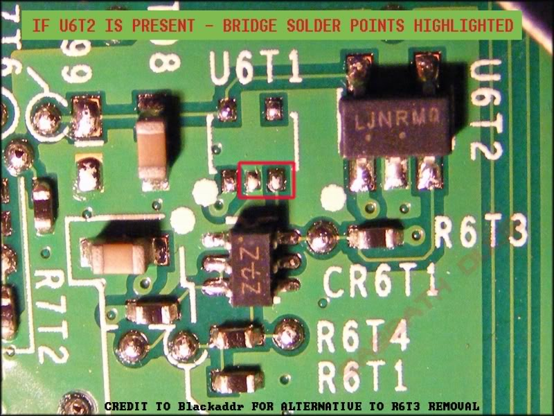

R6T3 is the label of a resistor on the mainboard of the Xbox 360, it supplies the necessary voltage for the Xenon (CPU) to burn the so-called eFuses. Burned eFuses prevent older firmwares (any older rev. than 4552) from running on your Xbox 360, thus eliminating the possibility to downgrade to an earlier version of the kernel. The Resistor itself is located in the field T-6. It is a 10k Ohm (10,000 Ohm) SMT resistor (Case 0402) functioning as part of a current limiting circuit.

The eFuse circuit uses a dual BJT array part MBT3904. The datasheet says:
Q1 has
- Pin 3 - collector
- Pin 4 - emmiter
- PIn 5 - base
Q2 has
- Pin 1 - emmiter
- Pin 2 - base
- PIn 6 - collector
From looking at the board traces, R6T3 is the collector resistor to Q2. The collector pin enables the LDO that provides the voltage for the eFuse burning. The base of Q2 is tied to the collector of Q1. When Q2 is on, the voltage at the collector is logic LO and the LDO is disabled (logic LO at the enable pin). Q2 turns on when the base is logic HI, which means Q1 must be off, so the voltage will pull high through the Q1 collector resistor.
Important Note
- The removal of R6T3 will cause an E80 system error if the NXE update is installed.
- Replacing the resistor with the original or with another 10K Ohm resistor usually fixes the error state.
- Given the difficulty in surface mounting a resistor as small as R6T3, simply holding a 10K Ohm in place while the 360 is powering up after giving a E80 will typically allow normal operation from then on.
- Care must be taken not to bridge the gap without a resistor in place as this may cause system damage.
Alternative to Removing R6T3
For people who find removing R6T3 too difficult can follow one of the two solution:
if U6T1 is present

if U6T2 is present  Shorting pin 6 to pin 1 (C to E) of the transistor pack, or pin 6 (C) to any conveniant ground. Thats only one jumper, ena pin cant go hi, since its grounded.
External Links
{kind=link}
Slim Version
The slim version of R6T3 on the trinity motherboard is R4R1. It is located right next to the x-clamp on the bottom of the motherboard. Some people have reported removing the resistor will not throw an error on startup, but will throw an error if the console tries to update.